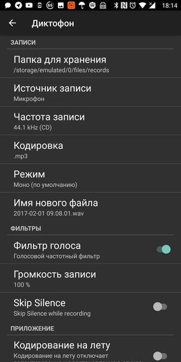
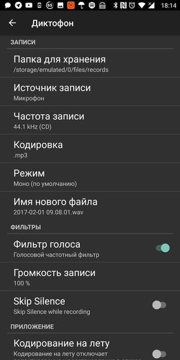

Про бюрократию, дохлых мышей, инвентаризадницу и админскую магию

Внезапно вспомнился период мой работы в конторе под названием КЭС-Прикамье, это было примерно лет десять тому назад и это была одна из самых бюрократических контор, которые мне удалось повидать в своей жизни. Одним из самых ярких примеров бюрократии была процедура заказа оборудования. Например, у Ивана Ивановича на рабочем месте сдохла компьютерная мышь. Далее начинается целый процесс, в который вовлечено множество людей и который влечёт за собой километры, набеганные по коридору.
Про ценообразование, качество и сложность

Порою меня просто поражает такая вещь, как ценообразование. Понятно, что мы приходя в магазин, видим только верхушку айсберга, состоящую собственно из товара и его цены, мы не учитываем логистику, налоги, оплату труда продавцов, стоимость рекламы и массу всего прочего. Но если сравнить два товара, которые имеют примерно одни функции, примерно одну сложность производства, но цена которых отличается в два - четыре раза, возникают резонные вопросы - за что мы платим?
Теги: mac, knifes, мысли-вслух
Про централизованный сбор логов

За последнее время случилось несколько событий, которые привели меня к необходимости централизованного сбора логов в своей домашней сети.
Что и зачем собирать?
- Периодически ночью отваливается интернет от билайна, хотелось бы видеть, что в этот момент происходит с роутером.
- Есть десяток IoT устройств, построенных на ESP8266, которые с прошивкой ESPEasy умеют отправлять логи по сети.
- Жена на новый год подарила управляемый гигабитный коммутатор, почему бы не снимать логи и с него, если уж будет такая возможность?
- Есть сервер умного дома, работающий на отдельной OrangePI Zero.
- Есть около полутора десятков докер и lxc контейнеров с различными службами и pet-проектами, в том числе и этот блог.
Хотелось бы хранить все эти логи в одном месте, чтобы облегчить их анализ, ротацию, архивирование и бекап. Как обрабатывать подобную информацию - это уже отдельная задача, но для начала эту информацию нужно собрать.
Теги: админское, docker, logging
Про диктофон для Андроид, который просто работает


 

Я давно уже хотел сделать отдельный раздел для обзора различных полезных андроид приложений, начну видимо, с этого.
Теги: android-soft
Про эволюцию хранения заметок.
Ко многим вещам, как и ко многому софту, которым я в текущий момент пользуюсь постоянно, меня приводил долгий эволюционно-эмпирический путь. Таким долгим путём прошли ножи, фонари, идут одноплатные компьютеры, домашний сервер, роутеры, клавиатуры, пульты дистанционного управления, множество скриптов и чёрт знает, что ещё. Сегодня я расскажу о том, как я решал проблему хранения заметок, а впоследствии - проблему иерархического хранения заметок.
Во времена школы всё было просто - записная книжка и ручка. Требований к записной книжке немного - удобные габариты, практичная обложка, да и всё пожалуй. Когда дело доходит до хранения заметок в виде данных, сразу появляется море хотелок и требований. И чтобы поиск работал и чтобы ссылки были (в том числе перекрёстные) и теги желательно и вложения и чтобы открывалось это везде и т.п.. Вполне можно проследить эволюцию подобных приложений по мере того, как я менял одно на другое.
Про евреев, чувства верующих и законы
Сразу хотел бы предупредить, что никого не хочу обидеть или оскорбить. Это взгляд со стороны на вещи и события, происходящие вокруг. А тема меж тем достаточно щекотливая.
Сочетание несочетаемого
Моя прабабка была еврейкой. С помощью нехитрых вычислений, доступных всем со школьной скамьи, можно легко подсчитать, что номинально я на 12,5% еврей. Сам же я себя евреем не считаю абсолютно, потому как это не только национальность, но и религия, а от любой религии я крайне далёк, ибо рождён был в Советском Союзе, сделан был в СССР. С детства я придерживался материалистических взглядов на жизнь, лет в шесть уже знал, кто такой Дарвин, а в семь в общих чертах представлял возможные механизмы появления и развития вселенной от большого взрыва и до наших дней. Одним словом, почвы для развития во мне религиозных взглядов на жизнь не было и меня это вполне устраивало.
А ещё у меня есть хороший друг. Мы познакомились с ним в университете и до сих пор общаемся, хотя уже и не так часто. Друг является чистокровным породистым евреем, причём достаточно религиозным. И при этом он всегда был одним из первых почти по всем показателям в нашей группе (мы обучались на мехмате), а впоследствии какое-то время преподавал математический анализ в ПГУ. Для меня всегда было огромной загадкой, как в одной и той же голове умещается религия и огромное количество знаний плюс критическое мышление, которые требуются для выживания обучения на мехмате? Почему они не вступают в конфликт друг с другом? Почему навыки анализа, полученные в одной области не применяются к другой?
Я не имею ничего против религии - каждый имеет право верить во всё, во что пожелает, пока это не задевает свобод других людей. Но для меня это странно. Часть знаний просто является привилегированной, не подлежащей критике и противоречащей остальной картине мира.
Теги: мысли-вслух
Про F-Droid и возможность качать видео и аудио с YouTube


На андроиде подавляющее большинство наших соотечественников пользуется приложениями, представленными исключительно в плей маркете. Кто-то что-то слышал о Яндекс.Store, ко-то возможно им даже пользовался, чаще всего это происходит лишь в том случае, если Яндекс.Store был предустановлен на устройство. Но мало кто из моих знакомых слышал об F-Droid. Конечно, он ориентирован на приложения с открытым исходным кодом, для большинства приложений нет скриншотов, а так же там нет бОльшей части того, чем мы привыкли пользоваться и что получаем из плей маркета. Это не замена плей маркету, а скорее приятное дополнение к нему.
Теги: android-soft
Про фильтры и информационный шум

Мой хороший друг написал статью о твиттере, социальных сетях и почте. В статье помимо прочего было замечено следующее:
Соцсети, например, создают очень сильный информационный шум. И если не уметь его фильтровать и отсеивать, то пользы не будет никакой. Будут усталые глаза, затекшая шея и ощущение, что ты сделал что-то полезное (на самом деле нет). Самый эффективный и простой инструмент доставки полезной информации — это электронные письма. И пока ничего более удобного не придумали.
Теги: мысли-вслух
Про клавиатуры, грязные хаки и подгорание пятой точки

Крайне редко что-то в этом мире вызывает у меня раздражение близкое к негодованию. И то, что я изложу ниже - как раз такой случай.
В последнее время меня очень сильно огорчает тенденция, касающаяся функциональных и некоторых других клавиш на клавиатуре. Складывается стойкое впечатление, что дизайн клавиатур разрабатывают или инопланетяне или люди, которые с клавиатурой никогда не работали, а ведь это основное устройство ввода уже на протяжении многих лет и от удобства работы с ним зависит в целом удобство работы с комьютером и то, насколько часто вы будете вспоминать чью-то маму в контексте действий сексуального характера.
Начну историю с плюсов, затем продолжу с наименьшего коэффициента подгорания и закончу самым высоким.
Теги: keyboards
Про любовь к минимализму и статическую генерацию контента
Для начала я хотел рассказать, как появился этот блог. Когда-то давно, когда мониторы были большими, но не по диагонали, а в толщину, интернет был по талонам картам, а никакого "вконтакте" и "фейсбука" ещё не было, меня, как и многих других моих знакомых, переполняло желание некоего самовыражения. Нужна была какая-то среда, где можно было поделиться плодами маразума с себе подобными, где можно было что-то обсудить, пообщаться, да и просто оставить себе какую-то заметку, к которой неплохо будет вернуться через несколько лет. Сначала я создал страницу на boom.ru (сейчас на этом домене живёт совсем другой сервис). Все эти frontpage, dreamweaver, миллион мельтешащих гифок на чёрном фоне и плохоструктурированный поток сознания кажется были вечность назад. Всё было бы ничего, но странице явно не хватало аудитории. Затем был блог на li.ru - куча "друзей", часть из которых в других городах, кое с кем я даже встретился лично. Попытки написать свою книгу, одобрение со стороны читателей, нехватка времени и мотивации, куча общения. Потом захотелось чего-то "своего". По совету друга (Иван, спасибо тебе) открыл для себя CMS под названием MaxSite. Это был очень интересный, достаточно функциональный комбаин, для которого было достаточное количество плагинов, тем, документации и всего прочего полезного. Фактически это был легковесный аналог WordPress, написанный человеком, делавшим плагины для оптимизации потребления ресурсов WordPress. Всё было настроено, перенесена куча статей из блога с li.ru, но в какой-то момент я перестал обновлять блог до свежей версии, кто-то воспользовался уязвимостью и начал рассылать спам с моего статического айпишника. К тому моменту я уже несколько месяцев ничего не выкладывал и вместо того, чтобы искать баги, просто завернул всё в архив и снёс с инстанса. С тех пор не поднимал ничего, ограничиваясь постами в VK.
ВКонтакте конечно, даёт кучу просмотров и огромную аудиторию, но с какого-то момента снова захотелось чего-то более личного и приватного, чего-то, что будет служить записной книжкой для всякого айтишного и не очень. Подумав, я понял, что это что-то должно отвечать нескольким требованиям:
- компактность и переносимость
- открытый код
- минимум зависимостей
- возможность жить десятилетиями без обновления платформы
- поддержка тегов
- возможность подключения комментариев
- возможность подключения подсветки синтаксиса
Теги: ностальгия, minimalism, web, shell, blog, bashblog